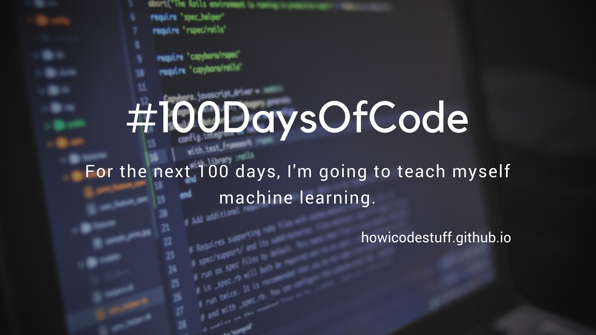

About
Benefits of the #100DaysOfCode Challenge
There are several good reasons you should consider committing to this challenge:
- Coding will become a daily habit for you - a habit that you can easily maintain after you've finished the challenge.
- Every day that you consistently code, you’ll build momentum. That momentum will make it easier for you to learn more advanced topics. You won’t have to spend extra time trying to remember what you did previously. You can stay in the “flow” of coding.
- You’ll make friends and meet like-minded people who are also working through this challenge alongside you. They’ll help you find the strength to keep coding even on the days when you don’t feel like you’re making progress. They can also help you when you inevitably get stuck.
- The projects that you’ll build will be small in scope, so by the time you finish, you’ll have completed several of them — and gained a wide range of experience.
- If you were just working through tutorials, you wouldn’t have much to show for it. But with #100DaysOfCode, you’ll build real portfolio projects that you can show to potential employers and share with your family.
- These projects will give you practice with concepts that frequently come up during developer job interviews.
- Your GitHub profile will look extremely active. And yes, hiring managers and recruiters do look at these.
- You’ll greatly diminish your fear of starting a new coding project. It will become a natural, ordinary thing to do.
- You’ll have a good reason to stop procrastinating and start coding every day.
Rules
The main rule: Code a mininum of an hour a day for the next 100 days.
Learn more about the main rules, as well as some other considerations:
- Code for minimum of an hour a day.
- Tweet your progress daily with the hashtag: #100DaysOfCode
- Each day, reach out to at least two people on Twitter who are also doing the challenge.
Outcome
Results after 100 days:
The outcome of programming for a hundred days straight:
- I learned HTML, CSS & JavaScript/(Responsive Web Design)
- I also learned how to use GitHub
- I learned about Bootstap, Sass, and other CSS frameworks.
- I learned about JavaScript libraries Vue.js, React.js, jQuery, etc
- And most importantly: I became a constant learner.